Horario 12:00 a 14:00
Genero: Horror gótico
Descripcion: Internado para señoritas llamado Santa Lucía,
que se encuentra aislado en una mansión antigua y sombría en medio de un bosque.
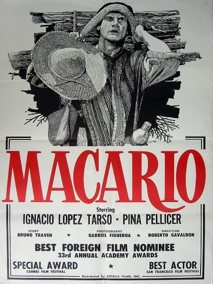
Horario 14:00 a 16:00
Genero: Drama
Descripcion: historia corta del escritor mexicano B. Traven. Cuenta la historia de Macario,
un campesino que tiene la habilidad de ver y comunicarse con los muertos.
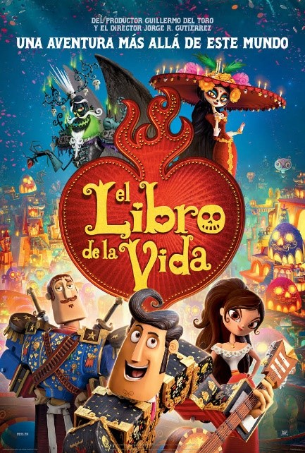
Horario 16:00 a 18:00
Genero: Animada
Descripcion: Historia de amor ambientada en el Día de Muertos. La película sigue a Manolo, un joven torero,
mientras viaja a través del mundo de los vivos y los muertos para demostrar su valentía y amor.
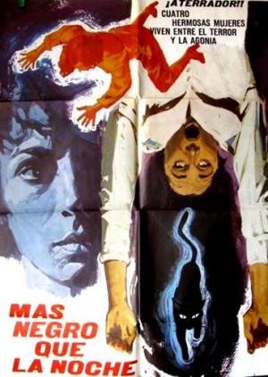
Horario 18:00 a 20:00
Genero: Suspenso
Descripcion: La trama sigue a cuatro mujeres jóvenes que heredan una mansión embrujada donde ocurren eventos sobrenaturales
relacionados con el pasado de la casa y la festividad del Día de Muertos.
 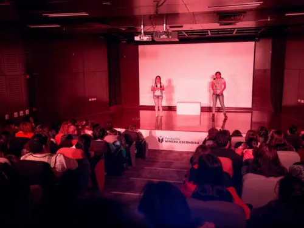
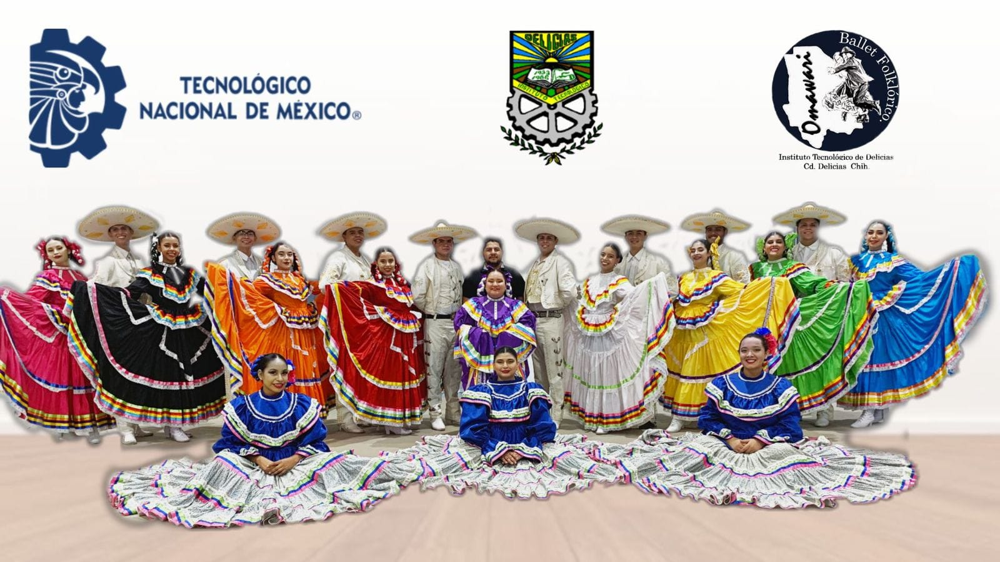
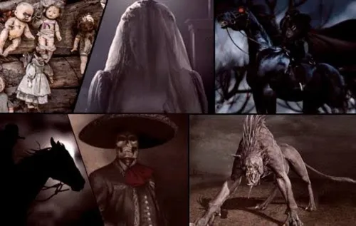
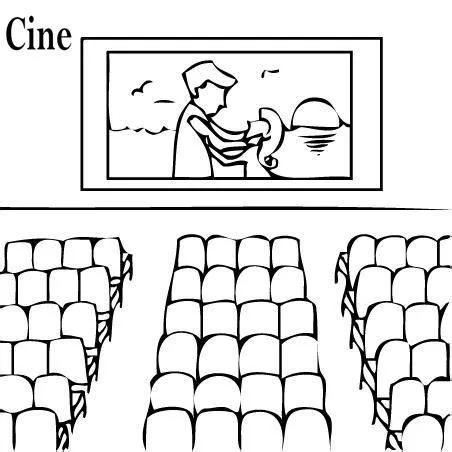
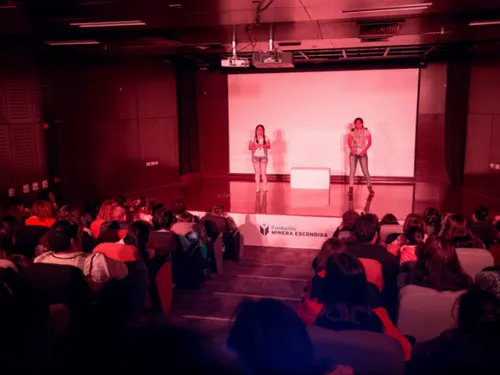
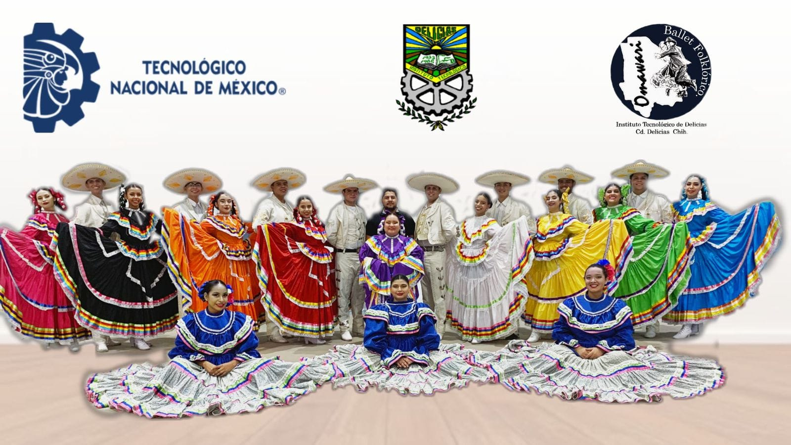
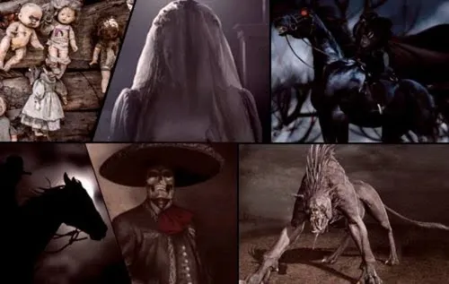
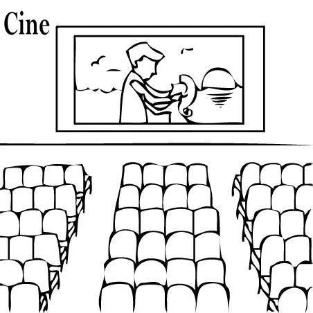